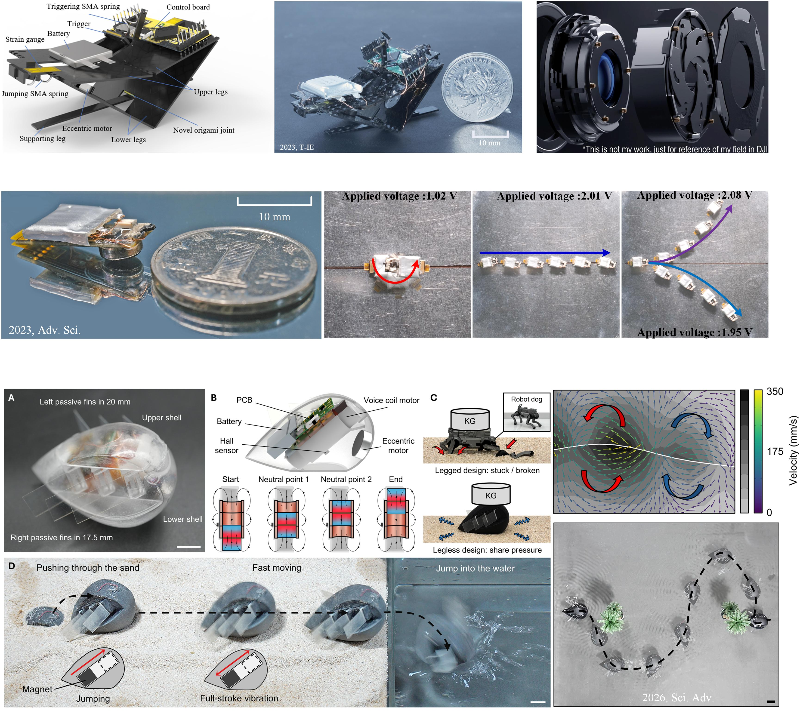

2024
Research Assistant
Harbin Institute of Technology (Shenzhen), supervisor: Prof. Yao Li (李曜), and Prof. Bing Li (李兵).

Academic Homepage
Focusing on miniaturized electromechanical system for 6 years
专注小型化机电系统研发与研究 6 年
Ph.D. student in Prof. Qiguang He's group at The Chinese University of Hong Kong, working on miniature robotics and electromechanical systems.
I am a Ph.D. student in Prof. Qiguang He's group (2024-2027, plan on). My research interests are small-scale robotics, including miniature iris systems, jumping robots, crawling robots, story robots, toy robots, and inspection robots.
Selected research and engineering appointments.
Harbin Institute of Technology (Shenzhen), supervisor: Prof. Yao Li (李曜), and Prof. Bing Li (李兵).
Scuola Superiore Sant'Anna, Italy.
SZ DJI Technology Co., Ltd.
Training across mechanical engineering and miniature robotics.
Ph.D. candidate in Mechanical Engineering.
M.S. in Mechanical Engineering.
B.S. in Mechanical Engineering.
Exchange student in Mechanical Engineering.
Representative papers and conference outputs by year.
Selected recognitions and media coverage.